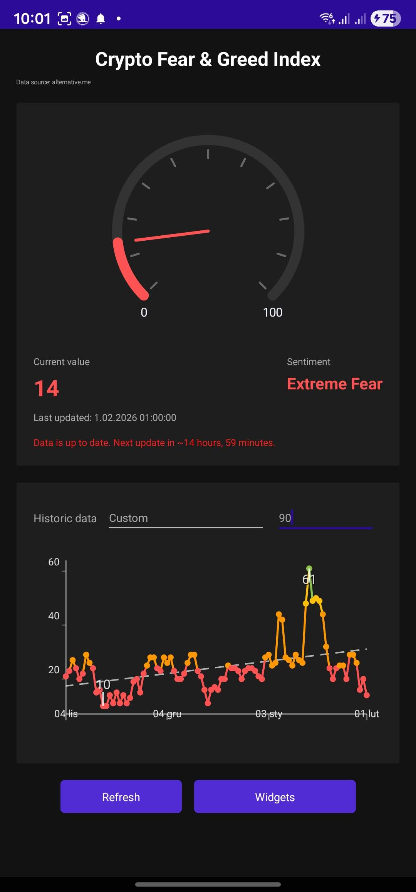
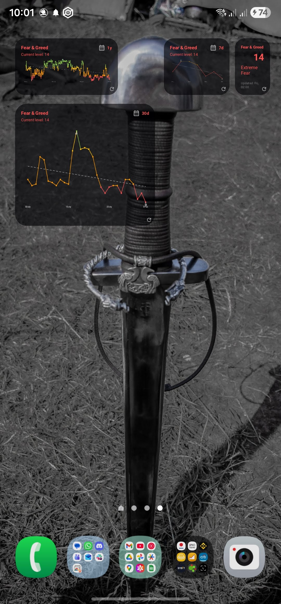

Current index
See the latest Fear & Greed value with a clear classification.
 Crypto Fear & Greed
Crypto Fear & Greed
Crypto Fear & Greed is a calm, no-noise tracker for the market sentiment index. It focuses on the essentials so you can check the signal and move on.


The app delivers the current index, a clear trend line, and quick context. No feeds, no logins, no distractions.
See the latest Fear & Greed value with a clear classification.
Understand the trend with a compact chart and recent data points.
Refresh when you want. The app caches the last result for speed.
Widget colors, opacity, and refresh intervals stay on your device.
This app is intentionally small. It pulls a public sentiment index and shows it without drama. No profiles, no social features, no endless settings.
Keep the index visible with compact widgets for the current value and chart. Customize colors and refresh cadence locally.
Widgets stay on the home screen with the current value and trend.
The app view keeps the index and history clear and compact.